B2B · Shipped
Big currency trades, done fast, at good rates.
I led the design of the FX feature in George Business, where companies trade currency in large amounts and need to move quickly.
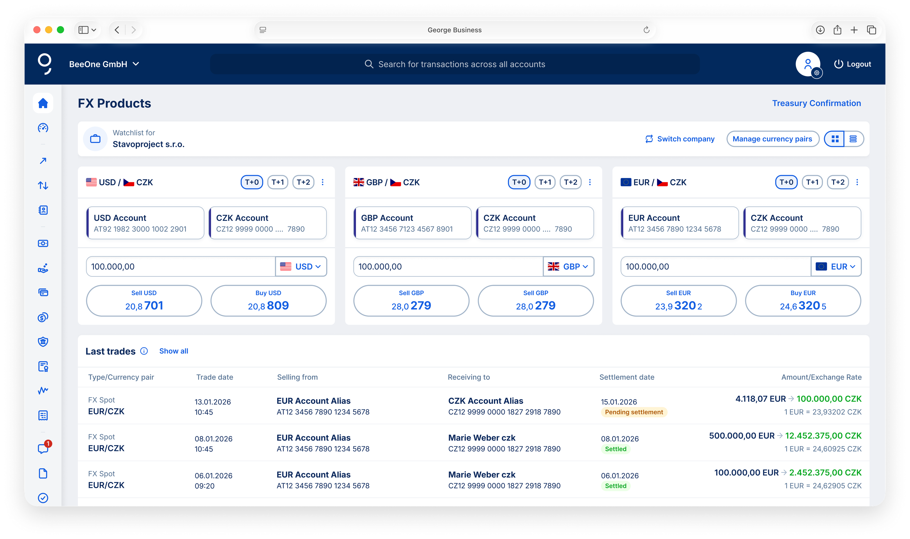
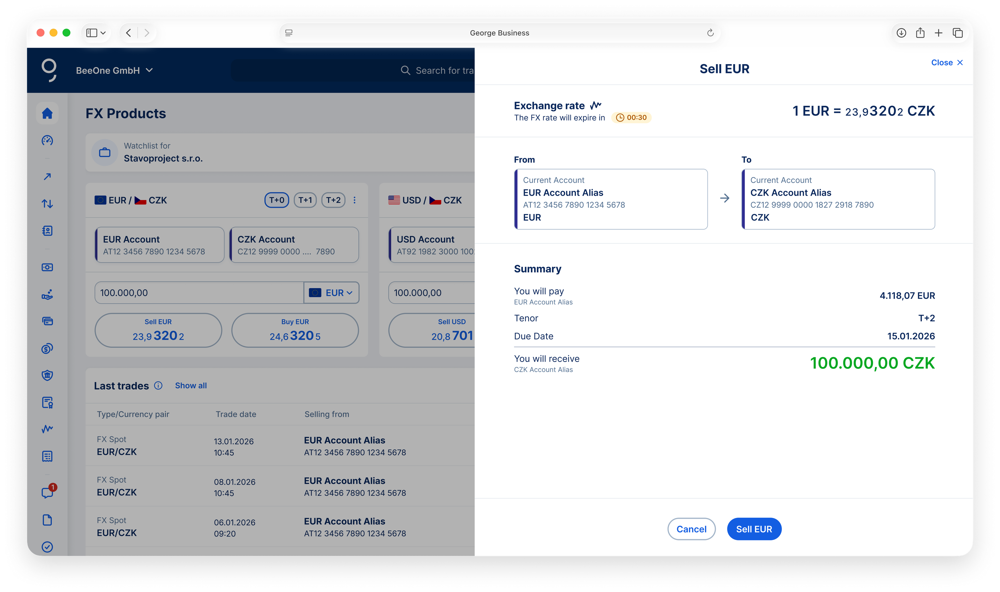
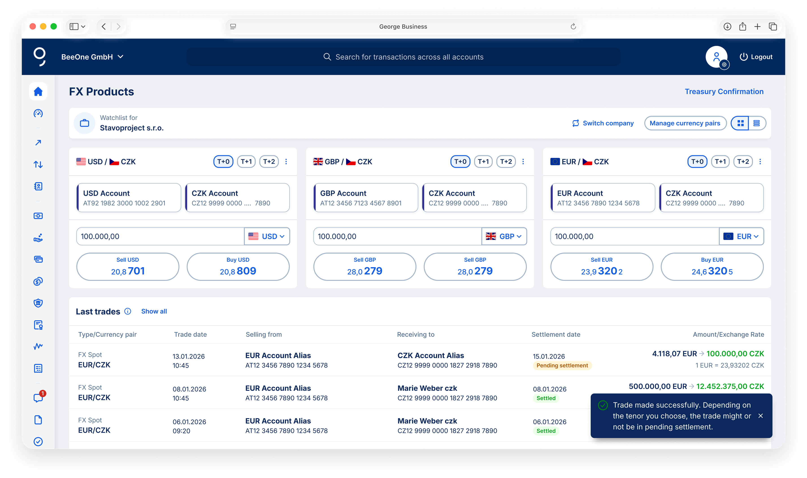
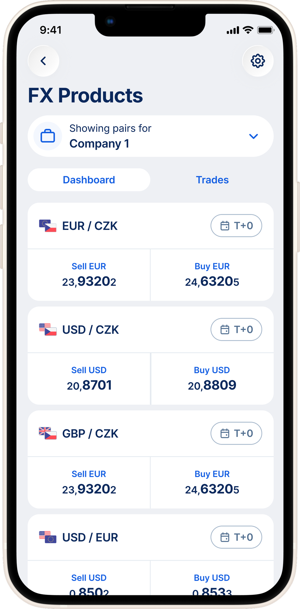
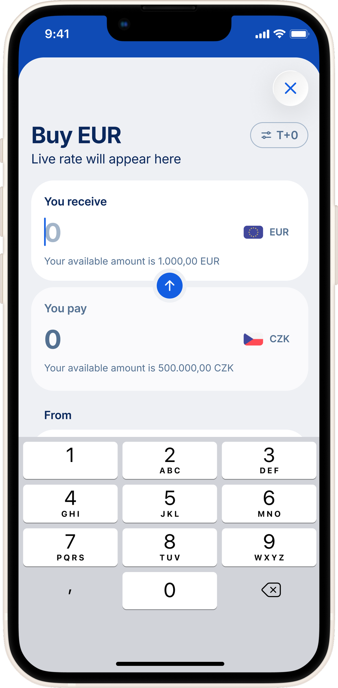
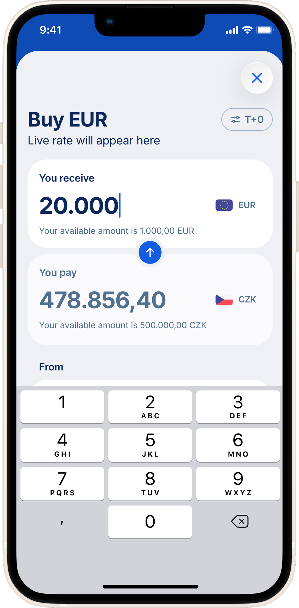
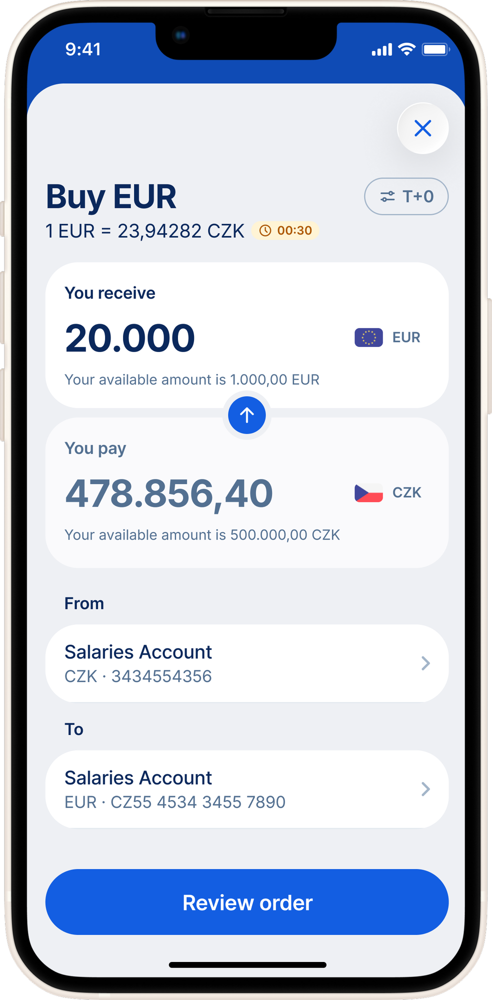
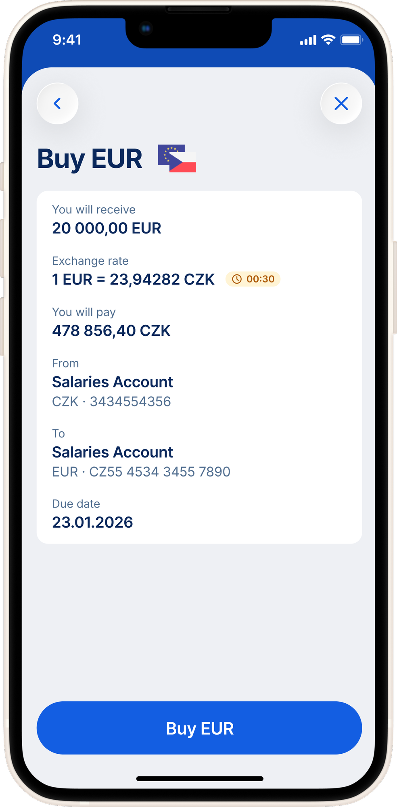
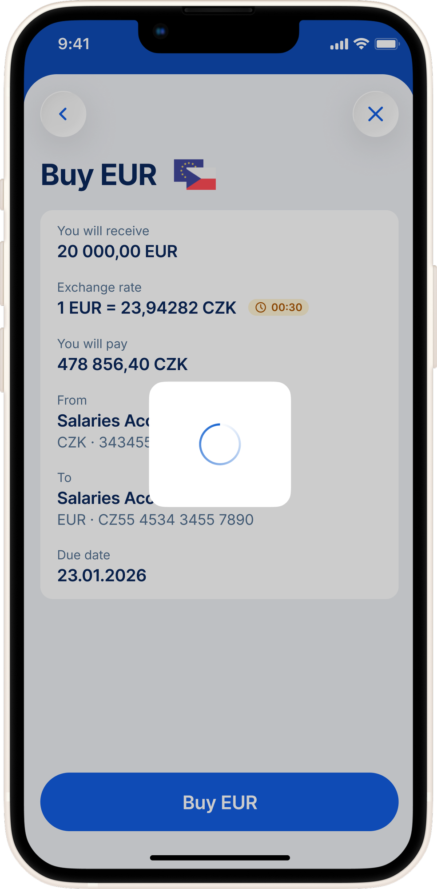
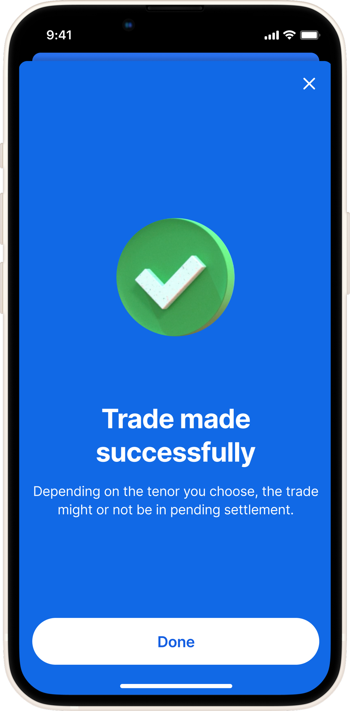
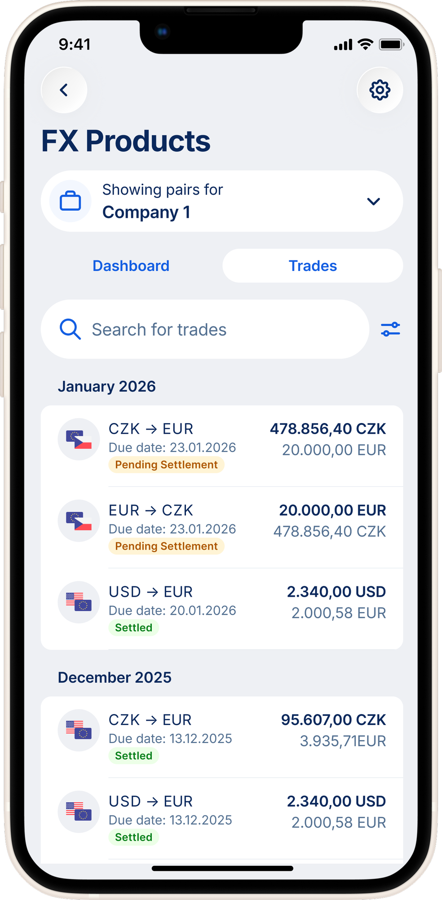
Context
Foreign exchange is part of everyday company banking: paying suppliers abroad, receiving foreign income, managing currency risk. Companies trade in large amounts, so speed and a competitive rate matter.
Strategic problem
How do you let a company secure a good rate on a large trade without the trade feeling risky or slow? Rates move constantly, and users need confidence in the price they see.
Add: what the previous experience looked like.
Role and leadership
I led the design of the FX feature from concept to release across web and mobile, working with product, engineering and the trading desk.
Constraints and challenges
Add: e.g. live-rate refresh, settlement rules, currency pairs, regulation.
Outcome and impact
Live rates and flexible settlement timing let companies complete a trade in a few taps and make currency exchange part of everyday company banking across web and mobile.
Add metrics if available: adoption, trade volume, time to complete.
Reflection
Add: what you learned, what you would change.